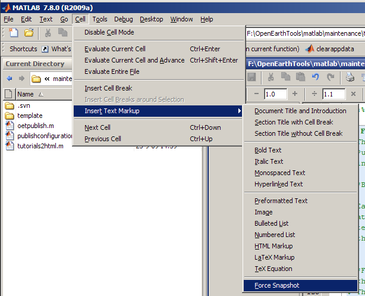

Cell formatting in general
The features described in this tutorial cover some of the possibilities described in the matlab help about cell formatting
Inprinciple each cell (defined by "%% ") is translated to a chapter in the published tutorial. The first cell is a general description of the tutorial unless it also includes matlab code. In that case it is interpreted as a chapter. Chapter names are deduced from the cell headers.
Luckily matlab offers a menu item especially for cell editing so we do not have to remember all markup code. The following figure shows where to find the cell editing menu.

Text formatting
Four commonly used text formats are included in the cell formatting features:
- monospaced text
- BOLD TEXT
- ITALIC TEXT
- hyperlink text
This is created as follows:
% % # |monospaced text| % # *BOLD TEXT* % # _ITALIC TEXT_ % # <http://www.openearth.eu hyperlink text> %
Include an equation
It is also possible to include an equation in your tutorial. This is done via the TeX language. For example:
is produced by:
% $$e^{\pi i} + 1 = 0$$
You do not have to design the string yourselve. MathType includes the possibility to export constructed equations in TeX format. To do so open MathType and construct your equation. Go to the preferences menu item and select Translators:
Select the TeX -- Plain TeX translator.
To translate the equation into TeX simply select the complete equation and copy and paste it into your tutorial.
Include list items
It is also possible to include lists in your tutorial.
A numbered list:
- ITEM1
- ITEM2
Is implemented as follows:
% % # ITEM1 % # ITEM2 %
A bulleted list:
- ITEM1
- ITEM2
Can be included with:
% % * ITEM1 % * ITEM2 %
Include a prerendered image
Another possibility is to include prerendered images into your tutorial. This could be a screenshot of something that is explained in the tutorial, but it can also be a logo or nice cartoon. The following code includes a walking man in this tutorial:
% <<prerendered_images/walkingman.gif>>

To all OpenEarth tutorials are published in the tutorials html directory. This can be found by executing:
fullfile(openearthtoolsroot,'tutorials','html')
ans = f:\openEarthTools\matlab\tutorials\html
This directory has a subdir called 'prerendered_images'. The best way to include a prerendered image in your tutorial is to include the image in that directory and reference to it as follows:
% <<prerendered_images/"image name.ext">>
In which "image name.ext" should be replaced by the name of the image that should be included.
Include html
Markup as described above enables the use of several frequently used formatting options. It is however also possible to use the full extend of possibilities offered by html coding. To do this simply include html code between two html tags:
% % <html> % <table border=1> % <tr> % <th>Name</td> % <th>Value</td> % </tr> % <tr> % <td>one</td> % <td>1</td> % </tr> % <tr> % <td>two</td> % <td>2</td> % </tr> % </table> % </html> %
This produces:
| Name | Value |
|---|---|
| one | 1 |
| two | 2 |
Include matlab code
Finally there is the possibility to actively run matlab code. Resulting figures and messages that were issued in the matlab Command Window will be included to the end of each formatting cell. For example including the following code in your tutorial:
figure('Color','w'); hold on grid on box on plot(1:0.1:10,sin(1:0.1:10),'DisplayName','sin(0:10)','Color','r');
Includes the resulting figure as well.
snapnow
Including snapnow in your code includes the image that was created up to that point in the code:
h = plot(1:0.1:10,cos(1:0.1:10),'DisplayName','cos(0:10)','Color','b'); snapnow; set(h,'Color','m','DisplayName','cos(0:10), color = ''m''');